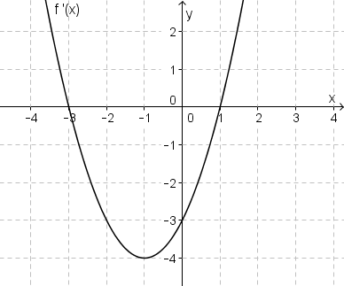

Matura 2015 kwiecień PR
Na tej stronie umieściłem kilka zadań treningowych do
matury rozszerzonej.
Na rysunku przedstawiono fragment wykresu pochodnej funkcji \(f\)  Minimum lokalne funkcja
\(f\) osiąga w punkcie
A.\( x=-4 \)
B.\( x=-3 \)
C.\( x=-1 \)
D.\( x=1 \)
D
Leżeli \(\lim_{x \to \infty} \frac{(px+5)^3}{10x^3-5x^2+1}=-4\), to
A.\( p=-2\sqrt[3]{5} \)
B.\( p=-2\sqrt{10} \)
C.\( p=-\sqrt[3]{\frac{10}{4}} \)
D.\( p=-40 \)
A
Dana jest funkcja \(f(x)=\frac{x+1}{x-1}\). Rozwiąż równanie
\(f'(x)=\frac{f(x)}{x}\).
\(x=-1-\sqrt{2}\) lub \(x=-1+\sqrt{2}\)
Funkcja \(f\) określona jest wzorem \(f(x)=x^3-4x\). Prosta o równaniu \(x=1\)
przecina wykres funkcji \(f\) w punkcie \(P\). Znajdź równanie stycznej do wykresu funkcji \(f\) w
punkcie \(P\).
\(y=-x-2\)
Wyznacz promień podstawy stożka o tworzącej długości \(5\), którego objętość jest
największa.
\(r=\frac{5\sqrt{6}}{3}\)
Jednym z pierwiastków trójmianu kwadratowego \(y=ax^2+bx+c\) jest \(-\frac{1}{5}\).
Liczby \(a\), \(b\), \(c\) tworzą ciąg arytmetyczny, a ich suma wynosi \(24\). Oblicz drugi
pierwiastek tego trójmianu.
\(x=-\frac{1}{3}\)
Odcinek łączący środki dwóch skośnych krawędzi podstaw graniastosłupa prawidłowego
czworokątnego ma długość \(10\). Jaką wysokość powinien mieć ten graniastosłup, aby pole jego
powierzchni bocznej było maksymalne?
\(h=5\sqrt{2}\)